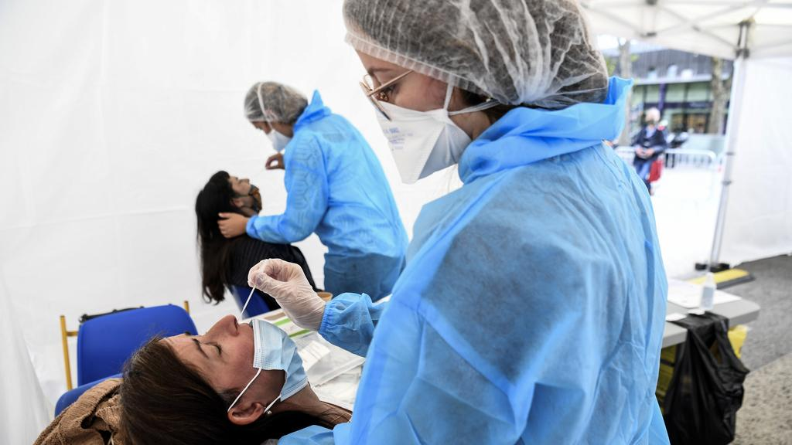

Covid-19 : chronologie de la pandémie en Europe
La pandémie de coronavirus a déferlé sur le monde et sur l'Europe en plusieurs vagues successives. Ses conséquences sur la santé, l'économie et la vie quotidienne sont lourdes dans tous les pays. Retour sur les événements européens clés qui jalonnent cette crise sanitaire.
Covid-19 : la situation en Europe
Depuis le début de la pandémie, l'Europe compte au 8 février :
- 23 683 188 cas confirmés
- 585 887 décès recensés
(Source : European Centre for Disease Prevention and Control, chiffres pour l'UE/EEE + Johns Hopkins University).
Le rebond de l'épidémie, ou sa progression, sont les plus importants dans les sept pays suivants (chiffres du 8 février) :
- Espagne : +198 871 cas sur les 7 derniers jours (6 297 cas cumulés / 100 000 habitants depuis le début de la pandémie)
- France : +140 061 cas sur les 7 derniers jours (4 982 cas cumulés / 100 000 habitants depuis le début de la pandémie)
- Royaume Uni : + 128 994 cas sur les 7 derniers jours (5 952 cas cumulés / 100 000 habitants depuis le début de la pandémie)
- Italie: + 83 706 cas sur les 7 derniers jours (4 363 cas cumulés / 100 000 habitants depuis le début de la pandémie)
- Allemagne : +66 014 cas sur les 7 derniers jours (2 763 cas cumulés / 100 000 habitants depuis le début de la pandémie)
- République tchèque : + 50 201 cas sur les 7 derniers jours (9 740 cas cumulés / 100 000 habitants depuis le début de la pandémie)
- Portugal : + 44 898 cas sur les 7 derniers jours (7 444 cas cumulés / 100 000 habitants depuis le début de la pandémie)
(Sources : Johns Hopkins University, Le Monde)

Les cinq pays européens les plus endeuillés depuis le début de la pandémie (chiffres du 8 février) :
- Royaume-Uni : 121 681 décès recensés
- Italie : 88 516 décès recensés
- France : 76 057 décès recensés
- Espagne : 59 081 décès recensés
- Allemagne : 57 120 décès recensés
(Source : European Centre for Disease Prevention and Control + Johns Hopkins University)